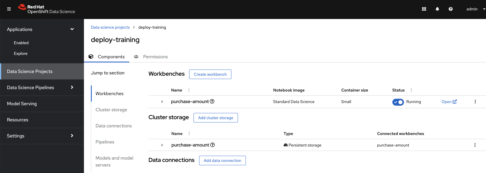
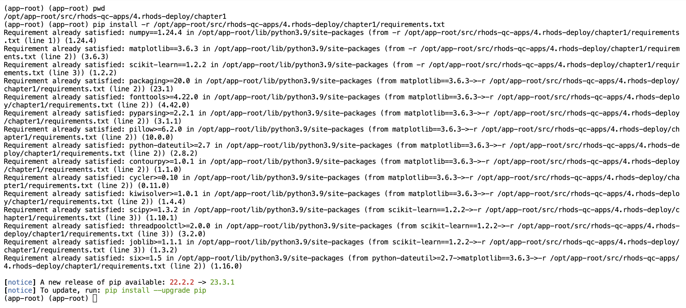
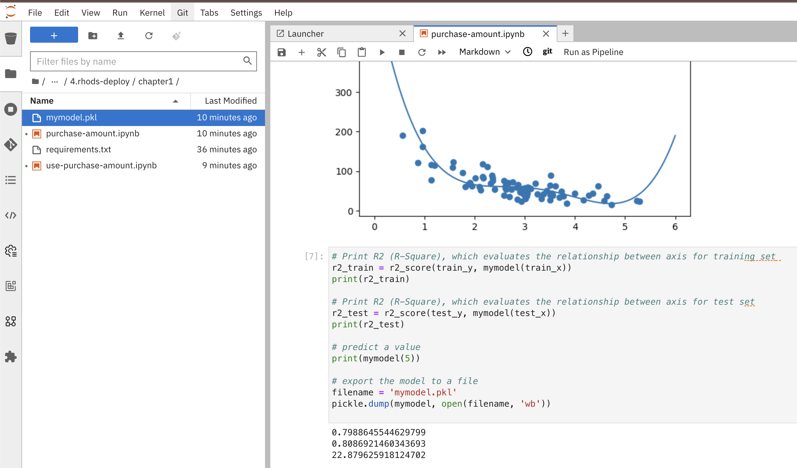

Section 1: Concepts
Model Serving
Machine learning model serving refers to the process of deploying, managing, and exposing machine learning models for inference, allowing them to make predictions or classifications on new, unseen data. Once a machine learning model has been trained and fine-tuned on a specific task, serving involves making the model available for real-time or batch predictions in a production environment. This is a crucial step in the machine learning lifecycle, as it enables the integration of models into applications, systems, or services, allowing them to deliver value in real-world scenarios.
Key aspects of machine learning model serving include:
Deployment:
After training, a machine learning model needs to be deployed to an environment where it can be accessed for inference. This can be on-premises, in the cloud, or on edge devices, depending on the application’s requirements.
Scalability:
Model serving systems need to be scalable to handle varying levels of demand. This involves ensuring that the infrastructure can handle increased load and that the serving architecture is designed for efficiency and resource optimization.
Real-time Inference:
Many applications require real-time predictions, where the model responds to input data quickly. This is common in scenarios such as fraud detection, image recognition, and natural language processing.
Batch Inference:
In some cases, models need to process large batches of data in a more efficient, non-real-time manner. This is common in scenarios like data preprocessing, analytics, and large-scale data transformations.
Monitoring and Logging:
Model serving systems often include monitoring and logging functionalities to track the performance and health of deployed models. This includes metrics such as response time, error rates, and resource utilization.
Versioning:
It’s important to manage and version different iterations of a model. This allows for easy rollback in case of issues and facilitates A/B testing when deploying new models.
Security:
Ensuring the security of the deployed models is crucial. This involves controlling access to the models, encrypting communications, and protecting against potential attacks or adversarial inputs.
Integration:
Model serving systems need to integrate seamlessly with other components of the application or system architecture. This often involves using APIs (Application Programming Interfaces) to facilitate communication between the model and the rest of the application. Popular tools and frameworks for model serving include TensorFlow Serving, Flask, FastAPI, Amazon SageMaker, and TensorFlow Extended (TFX), among others. These tools provide solutions for deploying, managing, and scaling machine learning models in production environments.
Model Server Runtime
The terms "model server runtime" and "inference engine" are closely related in the context of deploying and serving machine learning models, but they refer to different components of the overall system.
A model server runtime is the execution environment or platform where a trained machine learning model runs to make predictions or inferences. It is responsible for loading the model into memory, handling requests from clients, performing the inference, and returning the results. The runtime provides the necessary infrastructure for hosting the model, managing resources, and ensuring that the model’s predictions can be efficiently served in a production environment.
The model server runtime can be a part of a larger deployment framework or service that includes features such as scalability, versioning, monitoring, and security. Examples of model server runtimes include TensorFlow Serving, TorchServe, and ONNX Runtime. These runtimes support the deployment of models trained using popular machine learning frameworks and provide a standardized way to serve predictions over APIs (Application Programming Interfaces).
Inference Engine:
An inference engine is a component responsible for executing the forward pass of a machine learning model to generate predictions based on input data. It is a crucial part of the model server runtime and is specifically designed for performing inference tasks efficiently. The inference engine takes care of optimizations, such as hardware acceleration and parallelization, to ensure that predictions are made quickly and with minimal resource utilization.
The inference engine may be integrated into the model server runtime or work alongside it, depending on the specific architecture. For example, TensorFlow Serving incorporates TensorFlow’s inference engine, and ONNX Runtime serves as both a runtime and an inference engine for models in the Open Neural Network Exchange (ONNX) format.
Relationship: In summary, the model server runtime provides the overall environment for hosting and managing machine learning models in production, while the inference engine is responsible for the actual computation of predictions during inference. The two work together to deliver a scalable, efficient, and reliable solution for serving machine learning models in real-world applications. The choice of model server runtime and inference engine depends on factors such as the machine learning framework used, deployment requirements, and the specific optimizations needed for the target hardware.
Unravel The Runtime
When deploying machine learning models, we need to deploy a container that serves a Runtime and uses a Model to perform predictions, consider the following example:
Train a model
Using a RHODS instance, let us train and deploy an example.
-
In a data science project, create a `Standard Data Science`workbench. Then, open the workbench to go to the JuypterLab interface.
 -
Import following repostitory to the workbench: https://github.com/RedHatQuickCourses/rhods-qc-apps.git
-
Make sure that the workbench environment serves the required python packages for the notebook to run, for this to happen, open a terminal and run the following command to verify that the packages are already installed:
pip install -r /opt/app-root/src/rhods-qc-apps/4.rhods-deploy/chapter1/requirements.txt -
Open the notebook purchase-amount from the rhods-qc-apps/4.rhods-deploy/chapter1/purchase-amount.ipynb directory:

-
Run the notebook, and notice the creation of a new file in your environment, the
mymodel.pkl
|
There are different formats and libraries to export the model, in this case we are using pickle. Other common formats are:
The use of either of those formats depend on the target server runtime, some of them are proven to be more eficient than others for certain type of training algorithms and model sizes. |
Use the model in another notebook
The model can be deserialized in another notebook, and used to generate a prediction:
-
Open the notebook use-purchase-amount from the rhods-qc-apps/4.rhods-deploy/chapter1/use-purchase-amount.ipynb directory:

-
Run the use-purchase-amount notebook and notice the result:
-
You can get the same result without training the model again.
-
You are not training the model in the user-purchase-amount notebook, you are re-using the output from the training notebook, and using the generated model to generate an inference.
-
|
At this moment the model can be exported and imported in other projects for its use. Normally there will be an S3 bucket or a model registry to store models and versions of such models, and instead of manually exporting the model, there would be pipelines making the model available. |
Use the Model in a Container
For this section, you will need postman (or docker) to create an image, and a registry to upload the resulting image.
web application that uses the model
The pickle model that we previously exported can be used in a Flask application. In this section we present an example Flask application that uses the model.
|
Although we are actually serving a model with Flask in the exercise, Flask is not considered part of the Model Serving feature. This example represents one way in which some customers decide to embed their models in containers, although RHODS provides for mechanisms that can make this process of serving a model a simpler process, when provided with the proper model formats. |
-
In your computer, create a new directory to save the source code of the web application. Navigate to that directory.
-
Download the
mymodel.pklfile from JupyterLab into this directory. -
Open the directory with a python IDE, then create a python script named
app.pywith the following code:from flask import Flask, request import pickle app = Flask(__name__) # Load model with open('mymodel.pkl', 'rb') as f: model = pickle.load(f) model_name = "Time to purchase amount predictor" model_file = 'model.plk' version = "v1.0.0" @app.route('/info', methods=['GET']) def info(): """Return model information, version how to call""" result = {} result["name"] = model_name result["version"] = version return result @app.route('/health', methods=['GET']) def health(): """REturn service health""" return 'ok' @app.route('/predict', methods=['POST']) def predict(): feature_dict = request.get_json() if not feature_dict: return { 'error': 'Body is empty.' }, 500 try: return { 'status': 200, 'prediction': int(model(feature_dict['time'])) } except ValueError as e: return {'error': str(e).split('\n')[-1].strip()}, 500 if __name__ == '__main__': app.run(host='0.0.0.0') -
Create a
requirements.txtto describe the python dependencies to install on container startup:click==8.0.3 cycler==0.11.0 Flask==2.0.2 fonttools==4.28.5 gunicorn==20.1.0 itsdangerous==2.0.1 Jinja2==3.0.3 kiwisolver==1.3.2 MarkupSafe==2.0.1 matplotlib==3.5.1 numpy==1.22.0 packaging==21.3 pandas==1.3.5 Pillow==9.0.0 pyparsing==3.0.6 python-dateutil==2.8.2 pytz==2021.3 scikit-learn==1.0.2 scipy==1.7.3 six==1.16.0 sklearn==0.0 threadpoolctl==3.0.0 Werkzeug==2.0.2 -
Create a
Containerfileto build an image with the Flask application:# Base image FROM python:3.9 # Set working directory WORKDIR /app # Copy files COPY app.py /app (1) COPY requirements.txt /app (2) COPY mymodel.pkl /app (3) # Install dependencies RUN pip install -r requirements.txt # Run the application EXPOSE 8000 ENTRYPOINT ["gunicorn", "-b", "0.0.0.0:8000", "--access-logfile", "-", "--error-logfile", "-", "--timeout", "120"] CMD ["app:app"]1 The python application source code 2 The list of packages to install 3 The model -
Build and push the image to an image registry
podman login quay.io podman build -t purchase-predictor:1.0 . podman tag purchase-predictor:1.0 quay.io/user_name/purchase-predictor:1.0 podman push quay.io/user_name/purchase-predictor:1.0 -
Deploy the model image to OpenShift
oc login api.cluster.example.com:6443 oc new-project model-deploy oc new-app --name purchase-predictor quay.io/user_name/purchase-predictor:1.0 oc expose service purchase-predictor
Now we can use the Flask application with some commands such as:
curl http://purchase-predictor-model-deploy.apps.cluster.example.com/health
ok%
curl http://purchase-predictor-model-deploy.apps.cluster.example.com/info
{"name":"Time to purchase amount predictor","version":"v1.0.0"}
curl -d '{"time":4}' -H "Content-Type: application/json" -X POST http://purchase-predictor-model-deploy.apps.cluster.example.com/predict
{"prediction":34,"status":200}|
In this section we have manually:
There are automated and faster ways to perform these steps. In the following sections, we will learn about runtimes that only require you to provide a model, and they automatically provision an inference service for you. |
Model Servers And Container Builds
As you can see in the previous example, we manually created a Model Server by sending the model to an image that can interpret the model and expose it for consumtion. In our example we used Flask.
OpenShift offer integrations to pre-configured images that can receive an specific model format.
-
ONNX: An open standard for machine learning interoperability.
-
OpenVino IR: The proprietary model format of OpenVINO, the model serving runtime used in OpenShift Data Science.
In order to leverage the beneffits of such configurations you will:
-
Export the model in a format compatible with one of the available RHODS runtimes.
-
Upload the model to an S3
-
Create a Data Connection to the S3 containing the model
-
Create or use one of the available serving runtimes in a Model Server configuration that specifies the size and resources to use while setting up an inference engine.
-
Start a model server instance to publish your model for consumtion
While publishing this model server instance, the configurations will allow you to define how applications securelly connect to your model server to request for predictions, and the resources that it can provide.